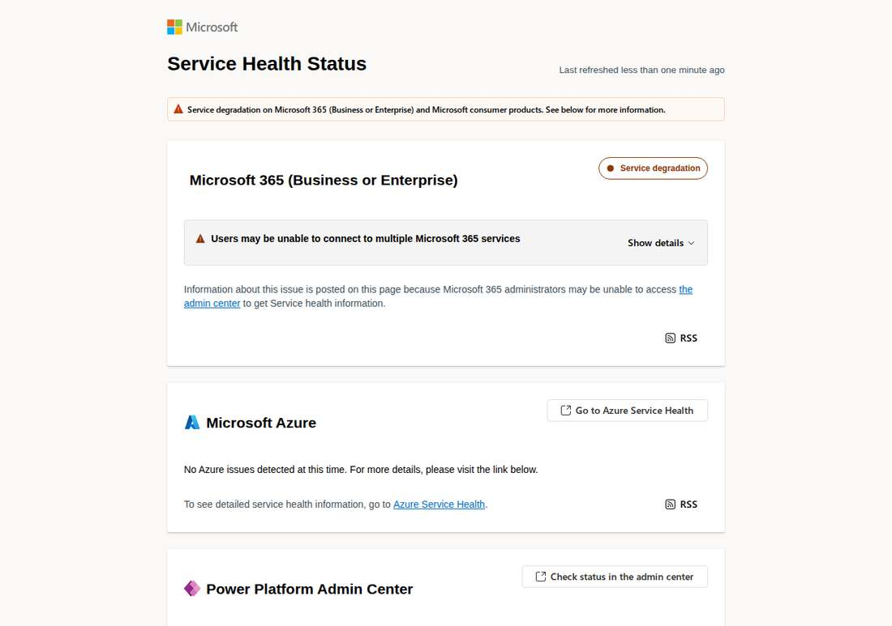

Microsoft 365 Outage Passes 25 Hours as 17:57 UTC Update Says Underlying Issue Addressed
Update to flashes 331 through 347: at 17:57 UTC on November 13, Microsoft posted a new service-health update for incident MO1550821 saying it is seeing broad recovery and stability across its services and has addressed the underlying issue while continuing to restore service to the remaining customers and regions. Microsoft apologized for the disruption and said this was a technical issue not related to cyber or AI agents, introduced by an issue during an earlier network capacity upgrade that surfaced following a recent network change. Services were restored gradually, validating stability at each stage. A full post-incident report is promised once the review is complete. The Pingoru mirror, crawled at 18:03 UTC, carries the 17:57 UTC update in full; Microsoft's public status page, read live at about 18:06 UTC, shows "Last updated: Friday, November 13, 2026 at 5:57:50 PM UTC" with the same update; Q13 FOX and Cape Town Etc quote Microsoft's official statement with identical wording. The outage, open since 16:17 UTC on November 12, is past 25 hours and 40 minutes; the next update is due by 20:00 UTC.

- 01THE NEW UPDATE — At 17:57 UTC on November 13, Microsoft posted a new service-health update: it is seeing broad recovery and stability across its services and has addressed the underlying issue while continuing to restore service to the remaining customers and regions. Microsoft apologized for the disruption and said this was a technical issue not related to cyber or AI agents, introduced by an issue during an earlier network capacity upgrade that surfaced following a recent network change. Services were restored gradually, validating stability at each stage, and a full post-incident report is promised once the review is complete. The Pingoru mirror, crawled at 18:03 UTC, carries the update in full; Q13 FOX and Cape Town Etc quote Microsoft's official statement with identical wording; the next update is due by 20:00 UTC.
- 02THE INTERVENING STEP — The 15:56 UTC update had said Microsoft remains focused on addressing residual impact and ensuring reliable service restoration, and was closely monitoring service health to verify sustained stability; the 14:56 UTC update had claimed sustained improvements in service availability. The outage opened at 16:17 UTC on November 12 (EX1550543) and widened at 18:26 UTC (MO1550821); servers returned to service and froze again under traffic at 00:00 UTC and 04:22 UTC. The Power Platform incident PP1550869 was declared restored at 15:50 UTC with a post-incident report promised within five days.
- 03THE WATCHPOINT — Next Microsoft update due by 20:00 UTC on November 13; whether any service or region is declared recovered, whether capacity is confirmed back to baseline, or whether the update repeats the same watching brief; the post-incident report with a confirmed root cause. Copilot and the OpenAI and Anthropic Microsoft 365 connectors remain affected. The public status page still lists the incident as service degradation for business, enterprise and consumer products.
WHAT HAPPENEDWhat Happened
Microsoft's global Microsoft 365 outage passed 25 hours and 40 minutes, and its newest update is the first to say the underlying issue has been addressed. At 17:57 UTC on November 13, 2026, Microsoft posted a fresh service-health update for incident MO1550821: it is seeing broad recovery and stability across its services, and it has addressed the underlying issue while continuing to restore service to the remaining customers and regions. The update apologizes for the disruption and says the incident was a technical issue not related to cyber or AI agents, introduced by an issue during an earlier network capacity upgrade that surfaced following a recent network change. The next update is due by 20:00 UTC.
The Pingoru incident mirror, crawled at 18:03 UTC, carries the 17:57 UTC update text in full, and Microsoft's public status page, read live at about 18:06 UTC, shows "Last updated: Friday, November 13, 2026 at 5:57:50 PM UTC" with the same update. News outlets quoting Microsoft's official statement carry the identical wording: Q13 FOX reports Microsoft apologized to customers and partners and confirmed the outage was not linked to a cyberattack or artificial intelligence, and Cape Town Etc quotes the same statement, including the apology, the broad recovery and stability line, and the network capacity upgrade explanation. The outage opened at 16:17 UTC on November 12, when Exchange Online users lost mailbox access, and widened at 18:26 UTC into a Microsoft 365 advisory covering Outlook, Teams, SharePoint Online, Copilot, Defender, Purview, Planner, To Do, Intune and Power BI. Microsoft has twice reported servers returning to service and then becoming unresponsive again once they started taking traffic, at 00:00 UTC and again at 04:22 UTC. No time for full recovery has been given.
The 17:57 UTC update matters because it is the first to name a cause and to say the cause has been fixed. Every earlier update described a mechanism under investigation, a mitigation being tried, or recovery being assessed, and the 15:56 UTC update stepped back to residual-impact wording after the 14:56 UTC update had claimed sustained improvements. This one replaces the watching brief with a diagnosis: an issue introduced during an earlier network capacity upgrade, surfacing after a recent network change. It also explains the slow pace: given the scale of demand, Microsoft restored services gradually, validating stability at each stage, which took longer but was meant to ensure a stable restoration. A full post-incident report is promised once the review is complete.
WHY IT MATTERSA cause, named at last, and the underlying issue addressed
For more than a day Microsoft described symptoms: servers failing health checks, an overwhelmed secure-connection process, a network configuration change under review, a surge in outbound call volume, machines stuck in a bad state, a traffic influx still being explained. The 17:57 UTC update is the first to close that loop with a cause: an issue introduced during an earlier network capacity upgrade that surfaced following a recent network change. It also says the underlying issue has been addressed, which is the first time any update has claimed the fault itself is fixed rather than a mitigation being applied. The careful wording still leaves room: restoring service to the remaining customers and regions is ongoing, capacity has not been declared back to baseline, and the incident remains listed as service degradation.
For the AI stack the exposure is narrowing but still open. Copilot Chat may not load or answer and may not reach email, calendar or files, and the OpenAI and Anthropic Microsoft 365 connectors were reported affected by Reuters. Companies that layered AI assistants on top of Microsoft 365 are still waiting on the same mailbox layer as everyone else. The explicit denial matters here too: Microsoft says this was a technical issue not related to cyber or AI agents, which rules out the two explanations that would have carried the widest consequences for the AI industry. The next update will show whether the broad recovery holds under Friday traffic or repeats the pattern of the two recoveries that froze again at 00:00 and 04:22 UTC.
WHAT TO WATCHThe 20:00 UTC update, then the post-incident report
The next fact is the 20:00 UTC update: whether any service or region is declared recovered, whether capacity is confirmed back to baseline, and whether the remaining customers and regions are named. Watch whether the broad recovery claim survives the evening traffic peak, and whether Microsoft gives a time for full restoration.
The post-incident report will carry the lasting answers: which network capacity upgrade introduced the issue, what the recent network change was that surfaced it, why restored servers froze again under traffic at 00:00 and 04:22 UTC, and what the traffic influx was. Until it lands, the capacity-upgrade explanation is Microsoft's own account, not an independently verified root cause. The earlier Power Platform incident PP1550869 was declared restored at 15:50 UTC with a post-incident report promised within five days.
SIGNAL JUDGMENT — ANALYSISTwenty-five hours in, Microsoft names a cause and says it is fixed
Tokenta Signal's judgment: Twenty-five hours and forty minutes in, Microsoft has done two things no earlier update did: it named a cause, an issue introduced during an earlier network capacity upgrade that surfaced after a recent network change, and it said the underlying issue has been addressed. That is a real step forward from the 15:56 UTC update's residual-impact holding pattern, and the apology plus the explicit denial of any cyber or AI-agent involvement closes off the two most damaging explanations. What is still missing is a declared end: capacity is not confirmed back to baseline, restoration to the remaining customers and regions is ongoing, and no time for full recovery has been given. Until the 20:00 UTC update shows the broad recovery holding under Friday traffic, treat the outage as nearly over, not over.
WHAT REMAINS UNCERTAINWhat Remains Uncertain
EVIDENCEEvidence

Microsoft's public service health status page, read live at about 18:06 UTC on November 13, 2026, showing "Last updated: Friday, November 13, 2026 at 5:57:50 PM UTC" with the 17:57 UTC update for incident MO1550821. The Pingoru incident mirror, crawled at 18:03 UTC, carries the identical update text. The update apologizes for the disruption, says Microsoft is seeing broad recovery and stability across its services, states this was a technical issue not related to cyber or AI agents, attributes the incident to an issue during an earlier network capacity upgrade that surfaced following a recent network change, says the underlying issue has been addressed while service is restored to remaining customers and regions, and promises a full post-incident report once the review is complete. The next update is due by 20:00 UTC. News outlets quoting Microsoft's official statement, including Q13 FOX and Cape Town Etc, carry the identical wording. The public page lists the incident as service degradation for business, enterprise and consumer products, and shows no issues for Azure.
PRIMARY SOURCESPrimary Sources
- Microsoft Service Health: Microsoft 365 outage status
https://status.cloud.microsoft - Pingoru: Microsoft 365 incident mirror, 17:57 UTC update
https://pingoru.io/providers/microsoft-365/incidents/12484708 - University of Pennsylvania: Microsoft Service Health incident mirror (EX1550543 / MO1550821)
https://mailservices.isc.upenn.edu/computing/email/penno365/alerts/ms-incidents.html - Q13 FOX: Microsoft apologizes for nationwide outage, but what took so long?
https://q13fox.com/news/microsoft-apologizes-global-outage - Cape Town Etc: Microsoft services recover after major global outage affecting millions
https://www.capetownetc.com/world/microsoft-services-recover-after-major-global-outage-affecting-millions/ - Azure Blog: Microsoft 365 outage, 12 November 2026
https://azureblog.co.uk/posts/microsoft-365-outage-12-november-2026/
RELATEDRelated Intelligence
- Microsoft 365 Outage Fully Closed as Business and Exchange Incidents Marked Service Restored
- Microsoft 365 Consumer Incident Remediated as Email Backlog Clears; Business Outage Still Open
- FAA Lifts Nationwide Ground Stop After Four Hours; Officials Blame Aging Equipment, Rule Out Cyberattack
- FAA Grounds All U.S. Departures in First Nationwide Stop Since 2023; New AI Routing Tool Faces Scrutiny